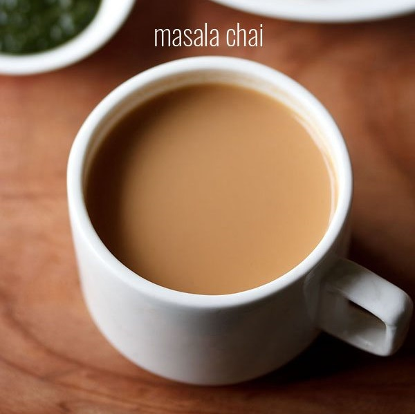
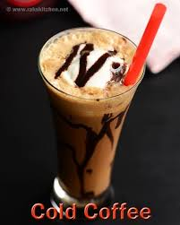

Beverages
Tea

Ingredients:
- 1 cup (250 ml) Milk
- 2 teaspoons Tea Powder
- 1/4 cup (approx. 60 ml) Water
- 3 teaspoons Sugar
Procedure:
- Boil water in a saucepan.
- Add sugar and tea powder in it and boil it for 3-4 minutes on medium flame.
- Add milk and boil it over medium flame for 6-7 minutes or until bubble starts to rise. You will see the change in color of the tea from milky shade to brown shade when it is ready.
- Turn off the gas and strain tea in cups.
Coffee

Ingredients:
- Coffee2 tsp
- Sugar1 tbsp
- Milk 1 cup
Procedure:
- Take the instant coffee powder and sugar in a cup.
- Add a tsp of water or milk and mix the coffee powder and sugar.
- Whisk the mixture rigorously with the help of spoon until it becomes light brown in color and creamy.
- Heat the milk and let it comes to boil.
- Pour the hot milk into coffee cream we prepare earlier. Mix with the help of spoon.
- Mix the milk & coffee cream by transferring it between two cups.
- Once done, serve the coffee hot.
Cold Coffee

Ingredients:
- 2 cups Cold Milk (Thanda Doodh)
- 1/2 cup boiling Water
- 3 tsp instant Coffee Powder
- 2 tblsp Cream
- 2 tblsp Sugar (Cheeni)
- Crushed Ice
Procedure:
- Dissolve instant coffee powder and sugar in boiling water and allow to cool.
- Blend the the coffee mixture and milk in a blender for few seconds.
- Add cream and crushed ice.
- Blend for another few seconds till it becomes frothy.
- Garnish with cream swirls and serve chilled.